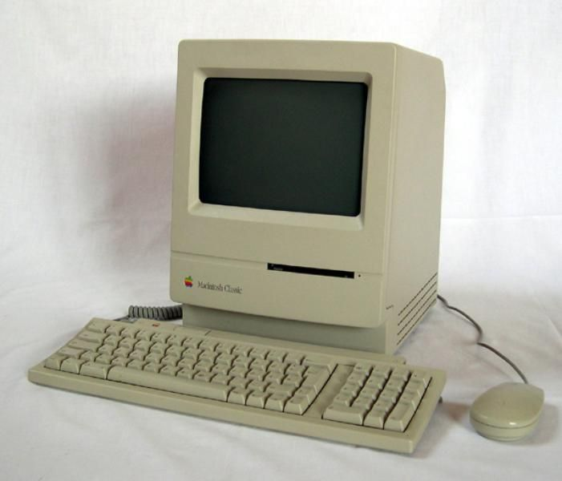

Zofia Włodarkiewicz
Co umiem z informatyki ?:
Z informatyki umiem troszeczke pythona i java scriptu niestety mało pamiętam :C
Czego chciałabym sie nauczyć ?:
W przyszłości bardzo chciałabym nauczyc się programować w wielu różnych językach programowania np.w Pythonie albo java scriptcie.
Chciałabym również nauczyć sie grafiki komputerowej oraz dowiedzieć sie jakie programy są do tego najlepsze.
Przydałaby mi się również wiedza jak znaleść informacje o osobie znając używając jak najmniejszel ilosci danych osobowych ,które mam dostępne >:3
Co chce robić w przyszłości ?:
Rzeczą , którą obecnie wydaje mi sie ,że chciałabym robić w przysłosci to praca jako grafik komputerowy, albo jeżeli bym miała wiedze i umiejetności to praca w samolocie pasażerskim :3